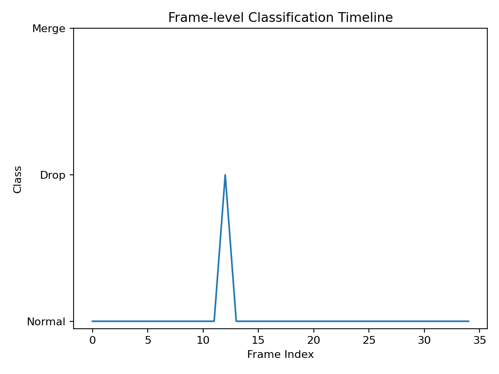
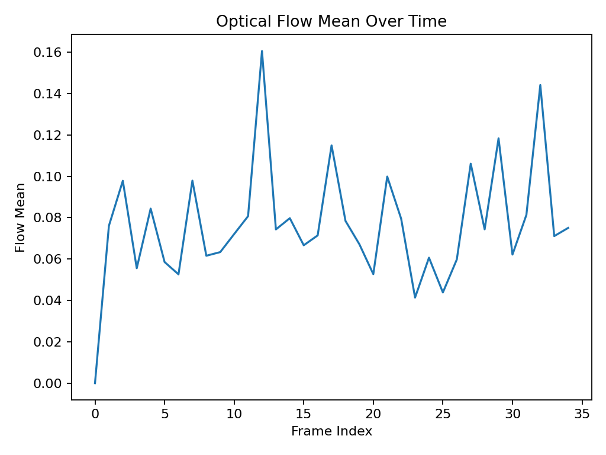

Temporal Error Detector — Report
Total Frames
35
Normal
34
Frame Drops
1
Frame Merges
0
Outputs:
- Annotated video:
output/annotated.mp4 (open from filesystem)
- Frame CSV:
output/report.csv
- Summary JSON:
reports/summary.json
Label Timeline

Optical Flow

How detection works
- Drop: large motion/discontinuity spike above robust threshold.
- Merge: medium-high diffs to both neighbors + reduced sharpness/ghosting cues.